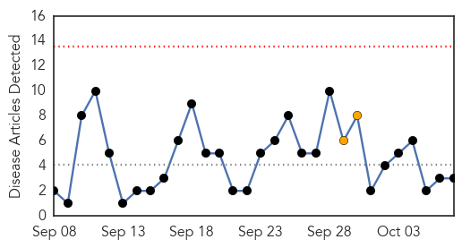
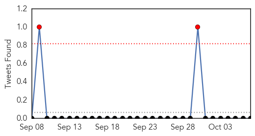
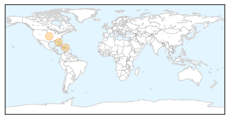
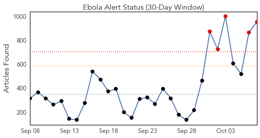
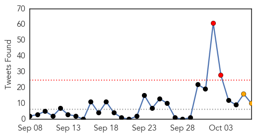
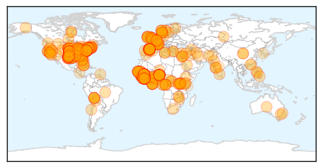
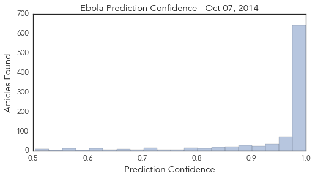

Chikungunya
30-Day Web Trend
0 alerts, 2 warnings

30-Day Twitter Trend
2 alerts, 0 warnings

Article Locations
Article Confidences

Top Articles:
Top Tweets:
-
No tweets found for Oct 07, 2014
Ebola
30-Day Web Trend
5 alerts, 0 warnings

30-Day Twitter Trend
1 alerts, 2 warnings

Article Locations
Article Confidences
Top Articles:
- 1.000
- Ebola outbreak: UN calls for global efforts to contain deadly disease
- 1.000
- Spanish nurse first to contract Ebola outside Africa
- 1.000
- Madrid Government To Kill Dog Of Spanish Nurse With Ebola
- 1.000
- Obama considers tighter Ebola screening for travelers from West Africa
- 1.000
- More cases of Ebola in Europe "unavoidable", WHO says
- 1.000
- Europe to see more Ebola cases after first transmission outside Africa
- 1.000
- Is So. Utah ready to deal with the Ebola virus?
- 1.000
- New concern worldwide as nurse in Spain gets Ebola
- 1.000
- The Bray Online: Culture
- 1.000
- Some experts say Ebola might spread through air
- 1.000
- Ebola Diagnosed in More Health Care Workers
- 1.000
- Ebola Diagnosed in More Health Care Workers
- 1.000
- Ebola outbreak outruns global response
- 1.000
- Obama considers tighter Ebola screening for travelers from West Africa
- 1.000
- Global efforts needed to fight Ebola in west Africa: UN
- 1.000
- Why Nation's Top Doctors Say Ebola Won't Spread in US
- 1.000
- NJ Hospitals, Health Officials Ready for Ebola, Say Safeguards Are in Place
- 1.000
- Ebola in US: People scared, but outbreak unlikely
- 1.000
- Obama considers tighter Ebola screening for travelers from West Africa
- 1.000
- Nurse in Spain gets Ebola, officials say 'we followed protocol'
- 1.000
- Questions raised about safety measures used for Ebola cases in Spain
- 1.000
- Nurse first to catch Ebola outside Africa
- 1.000
- Scientist who identified Ebola virus says epidemic will be long
- 1.000
- Nurse in Spain contracts Ebola
- 1.000
- Ebola outbreak: What Europe and US can learn from Nigeria in containing the virus
- 1.000
- Ebola outbreak: Britain must start screening for the virus, says Home Office minister
- 1.000
- US Airport Screenings Won’t Keep People With Ebola From Traveling
- 1.000
- Israel to screen arrivals from Ebola-hit states
- 1.000
- Spanish nurse first to contract Ebola outside Africa
- 1.000
- New concern worldwide as nurse in Spain gets Ebola
- 1.000
- Ebola: Microscopic virus, worldwide threat
- 1.000
- The World Looks to the USA for Leadership in Countering the Ebola Outbreak
- 1.000
- Ebola-affected Spanish nurse raises concerns in EU and the US
- 1.000
- Ebola virus: What is it and how does it spread?
- 1.000
- Ebola survivors in West Africa warned to wear condoms to avoid spreading disease
- 1.000
- US officials expected to announce Ebola screening at airports
- 1.000
- How Doctors Test For Ebola
- 1.000
- Nurse in Spain gets Ebola, raising global concern
- 1.000
- Global efforts needed to fight Ebola in west Africa: UN
- 1.000
- Why nation’s top docs say Ebola won’t spread in US
- 1.000
- County health officials prepared to deal with Ebola
- 1.000
- Spain's Ebola case raises global fears
- 1.000
- New concern worldwide as Spanish nurse gets Ebola
- 1.000
- Astorino, Cuomo At Odds Over Possible Ebola-Fueled Travel Ban « CBS New York
- 1.000
- How Other Countries Are Preparing to Stop Ebola
- 1.000
- iafrica.com Nurse contracts Ebola in Spain
- 1.000
- Ebola in Spain raises questions about protection
- 1.000
- Why nation’s top docs say Ebola won’t spread in U.S.
- 1.000
- Worst Ebola outbreak on record tests global response
- 1.000
- Dallas Ebola Patient on Ventilator, Getting Dialysis
Showing top 50 articles...
Top Tweets:
- 0.958
- As the Ebola outbreak rages in West Africa, a seven-story laboratory designed to study that virus and others... http://t.co/1tnGSApPPO
- 0.957
- RT: New Ebola paper in Insights into the Early Epidemic Spread of Ebola in Sierra Leone http://t.co/WZg1E5…
- 0.865
- No spread of Marburg virus so far in Uganda gives us confidence that we will control Ebola in W. Africa.
- 0.855
- For the latest updates on the Ebola outbreak in West Africa, including case counts and FAQs, visit: http://t.co/zMRVKZckqA
- 0.837
- Pres. @BarackObama on 9/16 announced a major surge in U.S. assistance to fight the Ebola epidemic in West Africa http://t.co/fvCgxFeQ60
- 0.826
- Imposing quarantine on entire nations would backfire and fuel the Ebola epidemic.
- 0.804
- None of contacts of Dallas Ebola patient showing symptoms or fever. Will continue to monitor.
- 0.785
- The continent of Africa has 4% of the world's health workforce, yet shares 25% of world's disease burden http://t.co/4PoMa6ad9v Ebola
- 0.754
- - There is no evidence that mosquitos or other insects can transmit Ebola virus. http://t.co/UOMbii8pas
- 0.710
- RT: Ebola is preying on a weak publichealth system after years of conflict and upheaval in Liberia: http://t.co/NFjWvFzQFB Ebola…
- 0.638
- endebolanow ebola westafrica staytuned http://t.co/fuxDczVRJZ
- 0.603
- - Viruses do mutate, but Ebola is very slow at mutation, so highly unlikely to go airborne. Best to stop epidemic quickly
- 0.598
- RT: Isolation is an important part of the fight against Ebola virus disease, but not of countries: http://t.co/6P8cFdggYV via…
- 0.580
- There is only 1 confirmed case of Ebola in the United States. http://t.co/qwzVKGi27e
- 0.577
- CDC working throughout US health care system & with health care workers to prepare for Ebola. Here’s how http://t.co/rgf45o4NvL
- 0.575
- RT: Spanish health worker contracts Ebola at Madrid hospital http://t.co/KQrjsFBcIu
- 0.574
- Here’s what the Ebola epidemic (still) looks like in West Africa http://t.co/3bmYCOd9US via lest we forget....
- 0.548
- RT: CDC working throughout US health care system & with health care workers to prepare for Ebola. Here’s how http://t.co/rgf4…
- 0.512
- RT: Bamboo hand washing stations are being used in Liberia to help combat the spread of Ebola. http://t.co/lEAx87Gppa http://t.co…
- 0.512
- RT: Bamboo hand washing stations are being used in Liberia to help combat the spread of Ebola. http://t.co/lEAx87Gppa http://t.co…
- 0.504
- RT: Scientists w/ expertise in Ebola control work w/ WHO to review the current science & information emerging from the affected count…